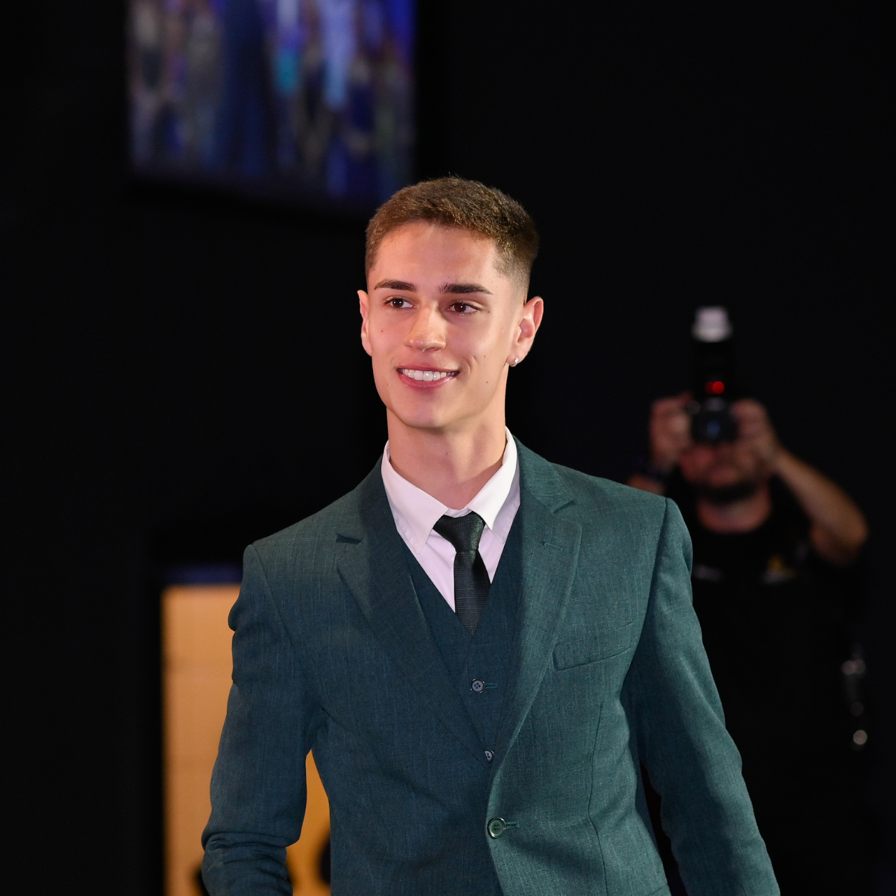

Desenvolvedor de software em formação.
Ver CurrículoSou um desenvolvedor de software em formação, focado na construção de sistemas reais e na resolução de problemas práticos por meio de código.
Desenvolvo aplicações utilizando Python e Java, com experiência em sistemas de gestão, automação e projetos interativos. Tenho especial interesse em desenvolvimento backend, dados e arquiteturas escaláveis.
Atualmente, aplico tecnologia em cenários de negócios reais, conectando o desenvolvimento de software com a tomada de decisões e a obtenção de resultados.
- Medalhista em olimpíadas científicas (OBMEP, OBG, ONC)
- Desenvolvimento de projetos tecnológicos
- Micckey: mouse adaptado para tetraplégicos
- Atualmente no terceiro semestre
- Algoritmos e programação
- Inteligência artificial e análise de dados
- Arquitetura de hardware
Controle de estoque de veículos, permite várias funcionalidades além de gerar arquivos para impressão.
Ver no GitHubSistema completo de monitoramento em tempo real para detecção de riscos de pragas e fungos em plantações, utilizando IoT e análise de dados.
Ver no GitHubWebsite de vendas em desenvolvimento para empresas do setor automotivo, com foco principal na Central Veículos.
Ver no GitHub